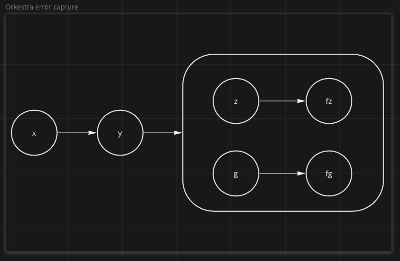

Notes
Powertools#
requirement.txt#
If wanting to use Powertools with your lambdas (recommended), make sure to add it to the lambdas' requirements.txt files as an optional requirement for Orkestra.
1 | |
timeouts#
Using Powertools may increase your lambdas' startup time.
You can account for this by increasing the timeout duration.
1 2 3 4 5 6 7 8 9 10 11 | |
Composition#
Let's say we had a 3 part workflow x >> y >> z.
At some point we needed to add a task that ran immediately after y. Let's call it g.
g runs after y but has no effect on z.
Coming from Airflow#
If you're coming from Airflow, you would likely add g this way:
1 2 3 | |

Orkestra (Step Functions) Graph#
Orkestra is built on top of AWS Step Functions which don't allow arbitrarily appending multiple downstream nodes to any to a given part of the State Machine graph, like Airflow.
In order to achieve a similar result, you must group tasks together like so:
1 | |

Errors#
The issue we run into is in the event of the failure of g.
Step Functions halt at the entire state machine at the time an error is first encountered.
Remember we said z doesn't depend on g. If g fails before z finishes execution, the entire State Machine will
halt execution and z won't run.
To help address this, Orkestra allows you to compose tasks like so:
1 2 | |

This will automatically create tasks for each parallel job that "swallow" errors.
g will still show up as having failed but the error will be forwarded as part of the output
of the parallel job that contains it.
You can then decide what to do with that error in a downstream consumer, whether to log it and continue execution, fail the state machine, loop back, etc.
Interfaces#
Any function decorated with compose will have certain methods that are useful for Infrastructure As Code.
compose.aws_lambda(...)#
Returns an instance of docs.aws.amazon.com/cdk/api/latest/python/aws_cdk.aws_lambda_python/PythonFunction.html
This removes some of the boilerplate from having to instantiate the PythonFunction itself i.e.
1 2 3 4 5 6 7 8 9 | |
1 2 3 | |
compose.task(...)#
This returns a Step Functions Task construct like those in docs.aws.amazon.com/cdk/api/latest/python/aws_cdk.aws_stepfunctions_tasks.html
1 2 3 4 5 6 7 8 9 10 11 12 | |
1 2 3 4 5 6 7 8 9 10 | |
1 | |